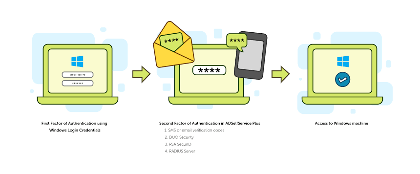
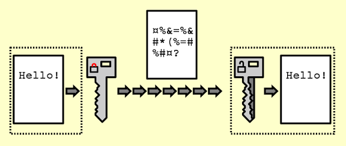
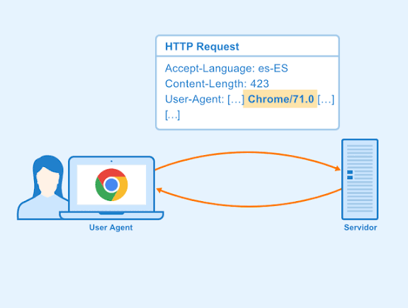
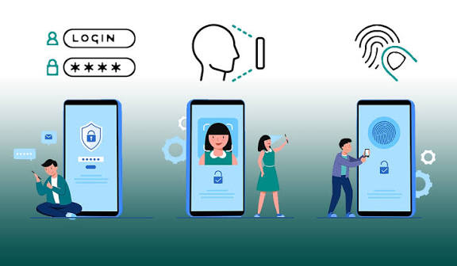

Depuración, Refactorización y Seguridad en Aplicaciones

Herramientas de Depuración
Las herramientas de depuración incluyen los depuradores integrados en IDEs como Xcode y JetBrains. Permiten inspeccionar variables y ejecutar código paso a paso.
- Android Studio Debugger
- Herramientas de monitoreo como Logcat y Network Inspector
- Simuladores y emuladores
Uso de Registros del Sistema para Identificar Defectos
Para identificar defectos utilizando registros del sistema (logs) se sigue un enfoque sistemático que implica recopilación, análisis y correlación de datos.
- Acceda a los registros del sistema
Localice el archivo o la herramienta de visualización de registros. En Windows, puede usar el "Visor de eventos".
- Filtrar entradas críticas
Busque niveles de gravedad altos como "ERROR", "FATAL" o "WARNING". Puede filtrar la vista para mostrar solo estos eventos.
- Identificar patrones y anomalías
1. Observe picos de errores o degradación del rendimiento a lo largo del tiempo.
2. Revise el mensaje de error para entender causa, ubicación y momento. Herramientas de análisis de logs pueden usar PLN.
- Usar herramientas de monitoreo
Software que analiza automáticamente los registros y envía alertas en tiempo real.
- Registrar los defectos encontrados
Documente los defectos en un sistema de seguimiento para priorizar correcciones y asociarlas con futuros problemas similares.
Proceso de Refactorización de Código
Mejorar la estructura interna del código sin cambiar su comportamiento externo, haciéndolo más legible y eficiente.
- Identificar áreas problemáticas
Buscar "code smells" como métodos largos, código duplicado, nombres confusos o lógica compleja.
- Crear pruebas unitarias
Verificar el comportamiento actual antes de realizar cambios para detectar errores introducidos.
- Planificar y refactorizar
Realizar cambios incrementales, analizando el impacto de cada modificación.
- Ejecutar pruebas
Tras cada cambio, ejecutar pruebas unitarias para confirmar que la funcionalidad no se rompe.
- Confirmar cambios y repetir
Si todas las pruebas pasan, confirmar los cambios; si fallan, corregir o revertir. Repetir hasta completar la refactorización.
Mecanismos de Seguridad en Apps
- Permisos

- Autorizaciones que solicita la app para acceder a recursos como cámara, micrófono o ubicación.
- Limitar acceso a información sensible.
- Ejemplo: Google Maps solicita permiso de ubicación para dar direcciones.
- Archivos de Configuración

- Almacenan parámetros de conexión o claves de API.
- Deben protegerse con cifrado o variables de entorno.
- Ejemplo: Archivo `.env` en Node.js con credenciales protegidas.
- Cifrado

- Convierte datos sensibles en formato ilegible sin clave.
- Tipos: simétrico (AES, DES) y asimétrico (RSA, ECC).
- Ejemplo: WhatsApp usa cifrado de extremo a extremo.
- Medios de Autenticación Externos

- Servicios externos para verificar identidad (OAuth, SSO, 2FA).
- Evitan contraseñas débiles y mejoran seguridad.
- Ejemplo: Inicio de sesión con Google o Facebook en apps como Spotify.
Autenticación con Servicios Externos
La aplicación delega la verificación de identidad a proveedores externos como Google, Facebook o Apple.
- Qué es
- Método que usa infraestructura de un proveedor externo para validar al usuario.
- No se gestionan contraseñas directamente en la app.
- Cómo funciona
- Usuario selecciona un proveedor externo.
- Redirigido a iniciar sesión en el proveedor.
- Proveedor valida identidad y devuelve token seguro a la app.
- Protocolos comunes
- OAuth 2.0
- OpenID Connect (OIDC)
- SAML
- Ventajas
- Evita gestión de contraseñas propias.
- Mejora la seguridad y la experiencia de usuario.
- Desventajas
- Dependencia del proveedor externo.
- Configuración correcta de tokens y redirecciones necesaria.
- Ejemplos
- Inicio sesión con Google en Spotify o YouTube.
- Inicio sesión con Facebook en juegos o redes sociales.
- Inicio sesión con Apple en apps iOS.
- SSO corporativo en Microsoft 365 o Slack.